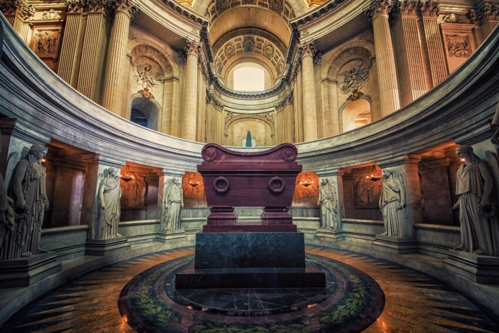
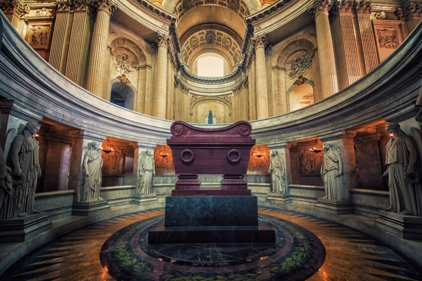

Les Invalides
Hôtel des Invalides


Storia e Significato
Les Invalides rappresenta uno dei complessi architettonici più significativi di Parigi. Costruito per volere di Luigi XIV nel 1670, questo maestoso edificio nasceva dall'esigenza di fornire assistenza ai veterani di guerra francesi. L'architettura imponente, caratterizzata dalla celebre cupola dorata, incarna la grandezza del Re Sole e la potenza militare francese.
Il complesso si estende su un'area di 13 ettari e comprende non solo l'ospedale originario, ma anche il Musée de l'Armée, la tomba di Napoleone e la chiesa di Saint-Louis-des-Invalides. Ogni elemento architettonico racconta una storia di potere, arte e memoria collettiva.
Architettura e Design
L'architettura di Les Invalides riflette perfettamente lo stile classico francese del XVII secolo. La facciata principale, progettata da Libéral Bruant, presenta un equilibrio perfetto tra simmetria e monumentalità. La cupola, aggiunta successivamente da Jules Hardouin-Mansart, raggiunge un'altezza di 107 metri e domina il panorama parigino.
La decorazione interna, ricca di dorature e marmi pregiati, testimonia la ricchezza e il prestigio dell'Ancien Régime. Ogni dettaglio architettonico è stato concepito per celebrare la gloria militare francese e la figura del monarca.
Curiosità Storiche
La Cupola Dorata
Contiene oltre 12 kg di foglia d'oro puro, applicata in 550.000 fogli sottilissimi
Capacità Originaria
Poteva ospitare fino a 4.000 veterani di guerra contemporaneamente
Tempo di Costruzione
Completato in soli 6 anni, un record per l'epoca
Tomba di Napoleone
Dôme des Invalides
 

Il Mausoleo dell'Imperatore
La tomba di Napoleone Bonaparte rappresenta uno dei capolavori dell'architettura funeraria mondiale. Progettata da Louis Visconti, questa monumentale opera d'arte custodisce le spoglie dell'Imperatore in un sarcofago di quarzo rosso di 35 tonnellate, posizionato al centro di una cripta circolare di straordinaria bellezza.
Il progetto architettonico riflette la grandezza e l'ambizione di Napoleone, con una struttura che evoca sia la maestà imperiale che l'innovazione tecnica. La cripta, accessibile attraverso una scala monumentale, crea un'atmosfera di sacralità e rispetto che onora la memoria di uno dei personaggi più influenti della storia europea.
Simbolismo e Significato
Ogni elemento della tomba è carico di significato simbolico. Il sarcofago, realizzato in quarzo rosso della Corsica, terra natale di Napoleone, poggia su un basamento di granito verde. Intorno alla cripta, dodici statue di Vittorie alate simboleggiano le campagne militari dell'Imperatore, mentre le iscrizioni commemorano le sue vittorie più significative.
La cupola sopra la tomba, con i suoi 107 metri di altezza, rappresenta l'ascesa dell'anima verso l'immortalità, mentre la luce naturale che filtra dall'alto crea un'atmosfera quasi mistica, perfetta per la contemplazione e il ricordo.
Dettagli Tecnici
Peso del Sarcofago
35 tonnellate di quarzo rosso della Corsica
Dimensioni
4 metri di lunghezza, 2 metri di larghezza
Trasporto
Trasportato dalla Corsica via mare nel 1861
Musée de l'Armée
Museo Nazionale dell'Esercito
Una Collezione Straordinaria
Il Musée de l'Armée ospita una delle collezioni militari più ricche e complete al mondo, con oltre 500.000 oggetti che raccontano l'evoluzione dell'arte della guerra dal Medioevo ai giorni nostri. La collezione comprende armature medievali, armi da fuoco storiche, uniformi, bandiere, documenti e opere d'arte militare di inestimabile valore.
Il museo è organizzato in sezioni tematiche che permettono ai visitatori di esplorare diversi periodi storici e aspetti della vita militare. Dalle armature dei cavalieri medievali alle uniformi della Grande Guerra, ogni oggetto racconta una storia di coraggio, innovazione e sacrificio.
Sezioni Principali
Il museo è diviso in diverse sezioni tematiche: l'Armeria Reale, che ospita le armature dei re di Francia; la sezione dedicata alle guerre napoleoniche, con uniformi e armi dell'epoca; la sezione della Prima e Seconda Guerra Mondiale, con documenti e oggetti personali dei soldati; e la sezione contemporanea, che esplora le missioni di pace e le operazioni moderne.
Ogni sezione è curata con attenzione ai dettagli storici e offre un'esperienza immersiva che permette di comprendere l'evoluzione della tecnologia militare e l'impatto delle guerre sulla società.
Pezzi Unici
Armatura di Francesco I
Armatura completa del re di Francia del XVI secolo
Cavallo di Napoleone
Vizir, il cavallo preferito dell'Imperatore
Bandiere Storiche
Oltre 1.000 bandiere e stendardi storici
Musée de la Libération
Leclerc & Moulin


Storie di Coraggio e Libertà
Il Musée de la Libération è dedicato alla memoria del generale Philippe Leclerc de Hauteclocque e di Jean Moulin, due figure emblematiche della Resistenza francese. Il museo racconta le loro storie straordinarie attraverso documenti originali, fotografie, oggetti personali e testimonianze che permettono di rivivere uno dei periodi più drammatici e gloriosi della storia francese.
L'esposizione permanente esplora non solo le gesta militari e politiche di questi due eroi, ma anche il contesto sociale e culturale dell'epoca, offrendo una visione completa della Francia durante l'occupazione nazista e la lotta per la liberazione.
Le Figure Protagoniste
Jean Moulin, prefetto e artista, divenne il simbolo della Resistenza francese, coordinando le diverse organizzazioni clandestine sotto l'occupazione nazista. La sua morte sotto tortura nel 1943 lo trasformò in un martire della libertà. Il generale Leclerc, invece, guidò la 2ª Divisione Blindata francese nella liberazione di Parigi e nella campagna d'Europa, diventando un eroe nazionale.
Il museo esplora le loro personalità complesse, le loro motivazioni profonde e il loro impatto sulla storia francese, creando un ritratto umano e commovente di due uomini che hanno sacrificato tutto per la libertà del loro paese.
Percorso Emotivo
Jean Moulin Artista
Dipingeva sotto lo pseudonimo Romanin
Jeep di Leclerc
Il veicolo originale usato nella liberazione
Documenti Originali
Lettere e telegrammi autentici